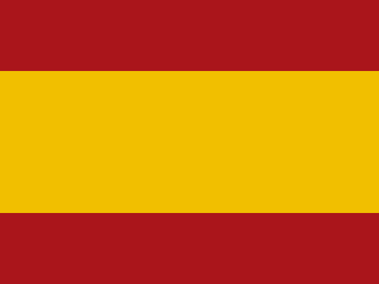

Politics / Political Science
Politics / Political Science
Political science studies how different political systems work, governments, public policy and political thought. Political research methods and analysis of political and economic data are also part of the program.
 Law and social sciences
Law and social sciencesExample courses
What do graduates do?
- Policy specialist
- Political risk analyst
- Adviser to a member of parliament
- Public affairs consultant
- Social researcher
- Local government specialist
- Public relations specialist
- Journalist
Which subjects matter?
LSE does not ask for a specific subject combination for Politics (BSc). It notes that applicants usually take Government and Politics, history, English, economics, sociology, philosophy, a foreign language and maths.
Example: University College London, first-year courses
- Foundations of Political Thought
- Democracy & Authoritarianism
- Policy Making
- Public Sector Economics
- Science, Scientific Discovery and Statistics
Length by country
Exams required for this field
 College assessment United Kingdom
College assessment United Kingdom
For Cambridge Human, Social, and Political Sciences, a college assessment is held; there is no need to register in advance. The UCL Politics and International Relations BSc page lists no exam.
Examples of schools where you can study this subject
14 schools in 9 countries. Programmes were checked on the schools’ own websites. These are only examples; every country has many more options. We choose the schools that fit your budget, documents and goals together.
 Canada
Canada
United Kingdom
 USA
USA
 Netherlands
Netherlands

SpainSwitzerland
 Italy
Italy
 Japan
Japan
 Malta
Malta
What to know, country by country
For each country where you can study this subject: an example tuition fee and the next step in the timeline. You can find the details in our country guides.
- 7 November 2026
Recommended application date for the University of Toronto first review rounds (OUAC 105)
- 26 October to 21 December 2026
Booking period for the January 2027 session of the ESAT, TMUA and TARA exams (for universities other than Oxford and Cambridge).
- 7 November 2026
SAT exam (next date 5 December 2026). Whether a school asks for a test varies by school
- 1 December 2026
Early round deadline for University Colleges (AUC, LUC, UCU)
- 15 January 2027
Deadline for IE University bachelor's round 2 applications. Decisions by 19 February 2027 at the latest
- November to December 2026
Prepare for a language certificate. At ETH the main language of the bachelor's is German, and a German certificate may be asked
- October 2026 to March 2027
Prepare a B2 English or Italian language certificate
- 21 October to 2 December 2026
Keio PEARL Period I application period. The application fee is 35,000 yen.
Let’s build your school list for Politics / Political Science together
- We choose schools from 26 countries that fit your grades, budget and documents.
- We gather every school’s application timeline, required documents and exam scores in one list.
- We put tuition fees and living costs side by side.
- We prepare your application file and personal statement together.
Frequently asked questions
Can you study political science in English in the Netherlands?
It depends on the school and the chosen specialization. In Leiden University's Political Science bachelor's, the International Relations and Organisations track is entirely in English and in The Hague, with limited places. The National and International Politics track is in Leiden and most courses are in Dutch.
Can you study political science in English in Italy?
Yes. Bocconi University's Bachelor in International Politics and Government is in English and takes 3 years. Besides politics, the program includes economics, management, law, history and quantitative methods. In the Politics and Policy Making track, an exchange term at a partner university is compulsory.
Can you study political science in English in France?
Sciences Po's bachelor's program takes 3 years, and one of the main fields is Politics & Government. The Europe-Asia program in Le Havre, the North America program in Reims and the Mediterranean-Middle East program in Menton are taught in English. French classes are compulsory in these programs. The main field is completed in the third year, which is spent abroad.
Other fields of study in this category
Last checked: October 2026.

Is Politics / Political Science right for you?
Let's talk about interests, strong subjects and target countries, and narrow down the subject and school options together.